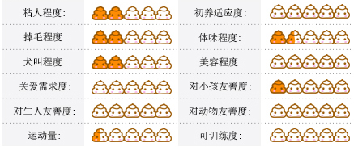

日本狆
日本狆的祖先是中国犬，与八哥犬，北京犬同属西藏猎鹬犬子孙，其悠久的历史可追溯到2700年前。西元732年．朝鲜皇室将日本狆的祖先（中国的拉萨猎鸟犬）送到日本宫庭．后来这种犬在日本繁衍。在19世纪时。此种狗出口到美国和英格兰，经过育种家多年的繁育，目前分布较广。日本狆姿态优雅，步态轻盈有弹性。性格坚韧、活泼、机警，有些闹。忠于主人，不信任陌生人。
基本资料
全名：日本狆
别名：日本狆犬
英文名：Janpanese Chin
类型：小型犬
功能：玩赏犬
毛长：长毛
身高：18-28cm
体重：2-7kg
寿命：10-11年
原产地：中国
日本狆介绍
日本狆的祖先是中国犬，与八哥犬，北京犬同属西藏猎鹬犬子孙，其悠久的历史可追溯到2700年前。
公元732年，即圣武天皇天平4年，日本狆由中国传到日本，在当地经多年的杂交繁衍形成固定品种。当年，日本皇室及上流社会的特权阶层非常宠爱这种异国小型犬。
1853年,由贝利提督携带数只日本狆回国，西洋人士才终于有缘和此优雅精致的小型犬相识，日本狆到达美国后,受到病毒感染，几乎绝种。现在大西洋两岸地区的日本狆数量呈增长趋势。
在19世纪，日本狆陆续进入西欧和美国。日本仲到达美国后，受到病毒感染，几乎绝种。据有关专家推断，大不列颠的育种者将日本狆与他们自己的小型犬杂交过。因为日本狆与查尔斯国王的小型犬非常像。与所有扁平面颊的品种一样，日本狆会出现呼吸和心脏的问题。因为在日本，日本狆属贵妇所有。所以在欧洲和美国，它们也是富人伴侣犬。
日本狆，对熟悉和喜欢的人充满感情而对陌生人或新情况有所保留。日本狆表情活泼、好奇、警惕且聪明。它虽然体形小巧，但体质健壮，喜欢同主人散步、郊游、登山等户外活动。
日本狆感觉敏锐，向主人撒娇被拒绝时，常显得多愁善感。举止端正潇洒，神态威严高傲，一副贵族仪表，幽默，爱表现自己，也是优良的展示犬。
日本狆由于受皇家及将军们的喜爱，使本犬在犬界的地位比较突出。由于日本狆是属于长毛犬种，所以在被毛打理方面需花上一定功夫，每天最好抽一小时来梳擦它们的被毛，一来防止纠结，二来促进披毛的生长，使它们看起来更加美丽。
日本狆，需要最小的活动空间，公寓，带或不带院子都可以。但它在室内活动时精力非常充沛，每天应进行以一个半小时以上的锻炼。很多日本狆会因为眼皮过长起皱而影响眼睛健康，甚至引起发炎，需作矫形手术。
除应每天梳理刷毛外，平常应用硼酸水洗眼，保持清洁；耳部也应经常清洁，防止积污垢。日本狆口吻同鼻道均短，夏天炎热季节的应注意预防中暑。注意体温的变化。生病前1天吃什么食物？大便是否腥臭？带粉色的黏液可能是肠道出血。这种情况，犬细小病毒病的可能性很大，需进一步化验，血常规，粪检（有细小病毒检验试纸），查寄生虫。